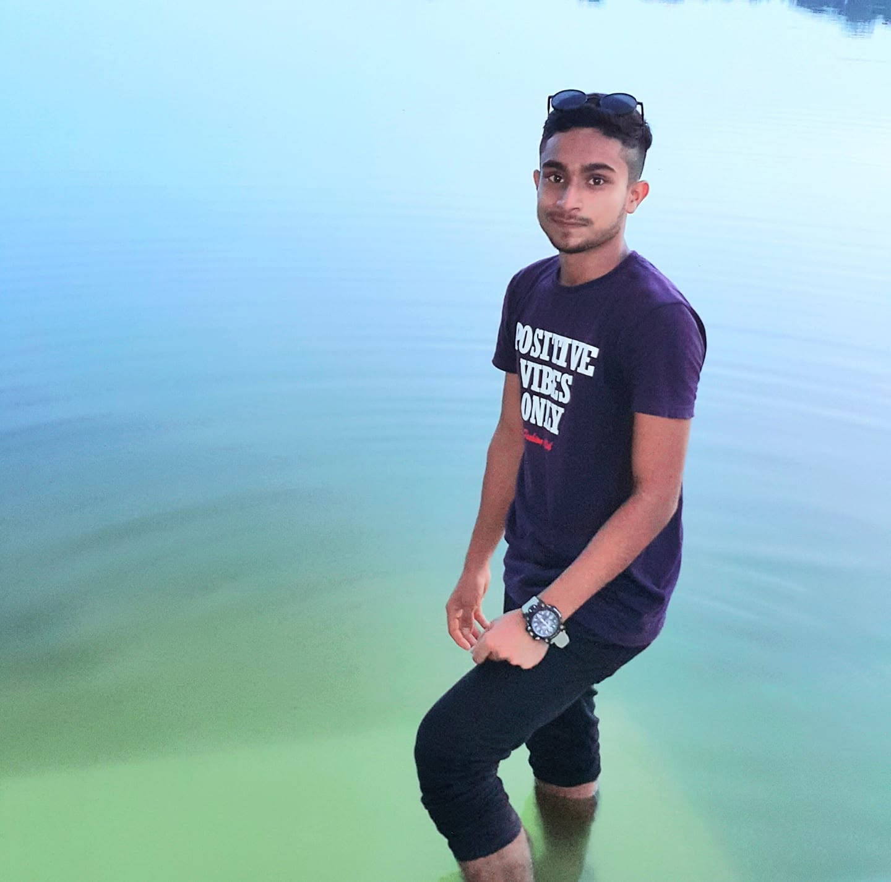

The Future of Journalism in a Post-Truth World
Exploring how modern journalists can build trust, verify facts, and reach audiences in an era of information overload.
Read MoreA passionate journalism student and storyteller at Daffodil International University — crafting meaningful narratives through research, words, and voice.


I'm Alemran Been Habib, currently studying at the Department of Journalism, Media and Communication at Daffodil International University. I believe every fact holds a story, and every story deserves to be told with clarity, empathy, and integrity.
From investigative research to compelling presentations, I focus on creating content that informs, inspires, and connects people.
A curated set of skills honed through academic study, practice, and a genuine love for storytelling.
Digging deep to uncover facts, verify sources, and build accurate, trustworthy stories.
Confidently addressing audiences with clarity, presence, and a strong narrative voice.
Producing engaging written, audio, and visual content across platforms and formats.
Structuring information into clear, compelling slides and delivering with impact.
Turning raw information into narratives that inform, resonate, and inspire.
From concept to publication — here's how I can help you communicate your story to the world.
Accurate, timely reporting on events, people, and issues that matter to your audience.
Thoughtful interviews, voice-overs, and audio content designed to engage listeners.
Articles, blog posts, feature stories, and copy that inform and inspire action.
In-depth topic research, fact-checking, and background analysis for your projects.
Designed, structured, and delivered presentations tailored to your audience.
Cross-platform narratives — from print to digital — that put your message first.
The academic milestones and recognitions that shape who I am today.
Studying media theory, reporting, editing, digital journalism, and communication strategy.
Actively contributing to university-level reporting, presentations, and student media initiatives.
Built the foundation for critical thinking, writing, and communication skills.
Recognized for confident, clear, and engaging public speaking in academic and creative programs.
A glimpse into the reporting, interviews, and events that inspire my work.


A selection of stories, reports, and presentations I've had the privilege to work on.
 Reporting
Reporting
A multi-part feature exploring student experiences, aspirations, and challenges at Daffodil International University.
Read Story Presentation
Presentation
A researched presentation on how young audiences consume, share, and verify news across social platforms.
View Slides Interview
Interview
An interview series featuring local voices in education, culture, and community leadership.
Watch NowThoughts, essays, and reflections on journalism, storytelling, and the world around us.
Exploring how modern journalists can build trust, verify facts, and reach audiences in an era of information overload.
Read More
From listening actively to asking the questions no one else dares — practical lessons from real interviews.
Read More
Data alone doesn't move people — stories do. Here's how narrative craft turns information into influence.
Read MoreHave a story to tell, a project to discuss, or an opportunity to share? I'd love to hear from you.
Reach out through any of the channels below — I typically respond within 24 hours.